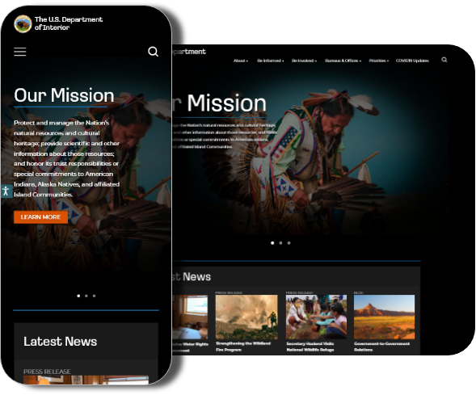
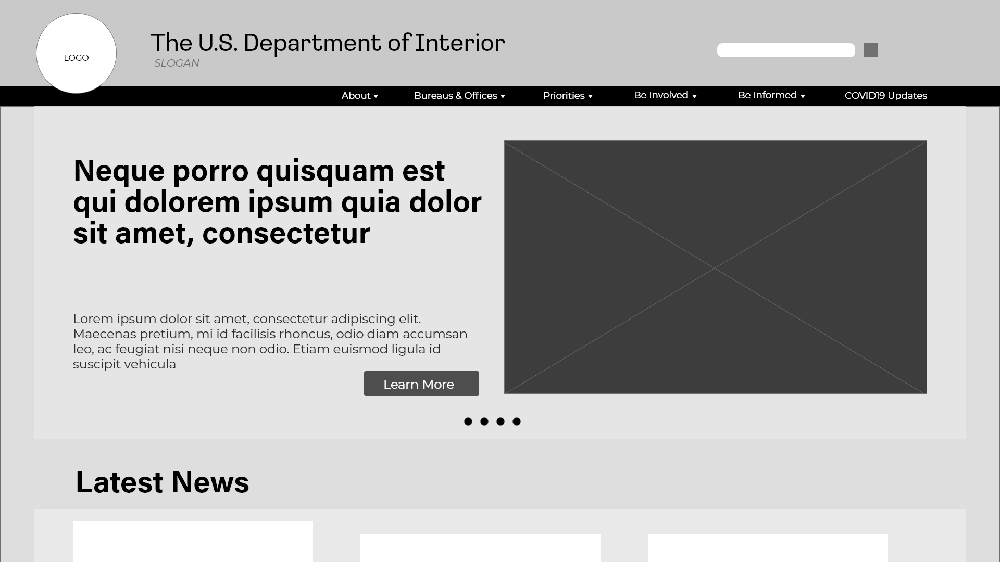
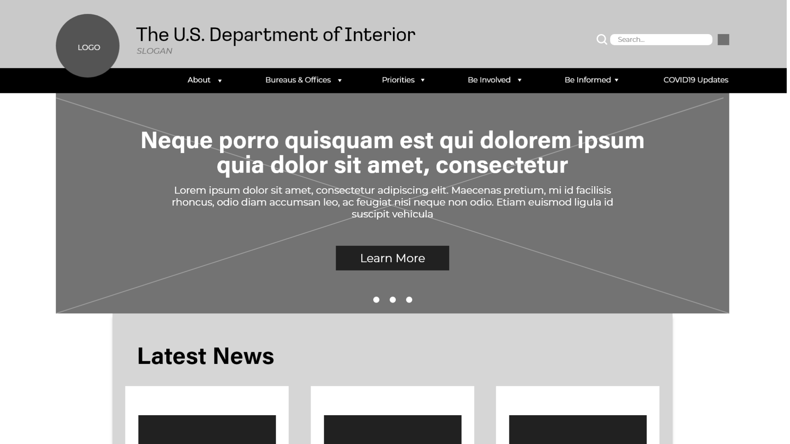
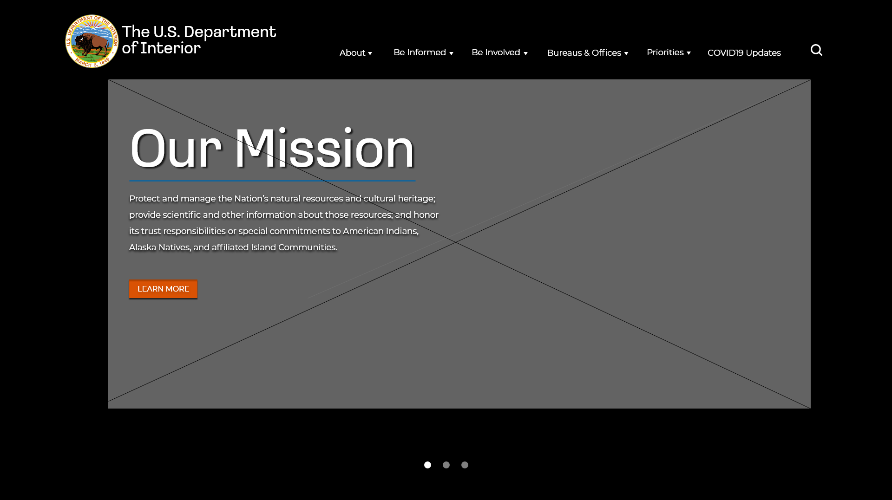
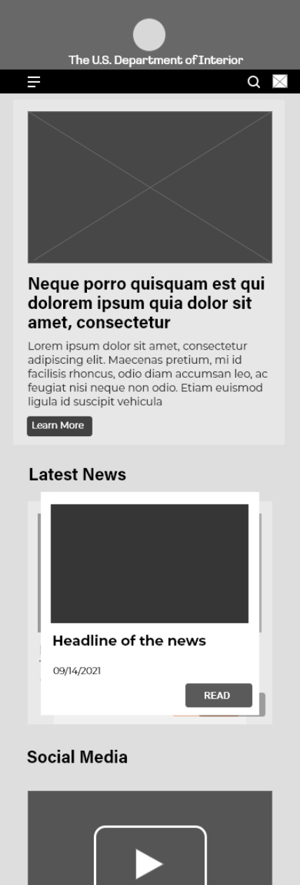
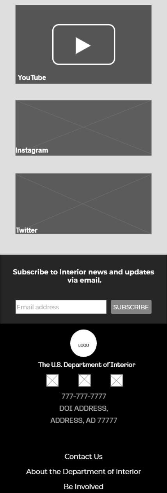
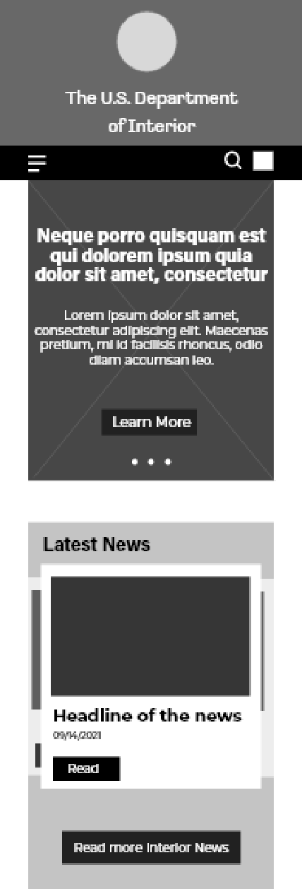
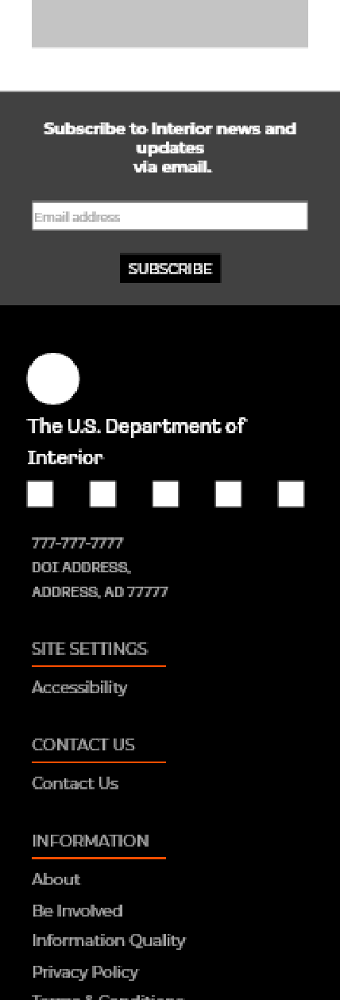
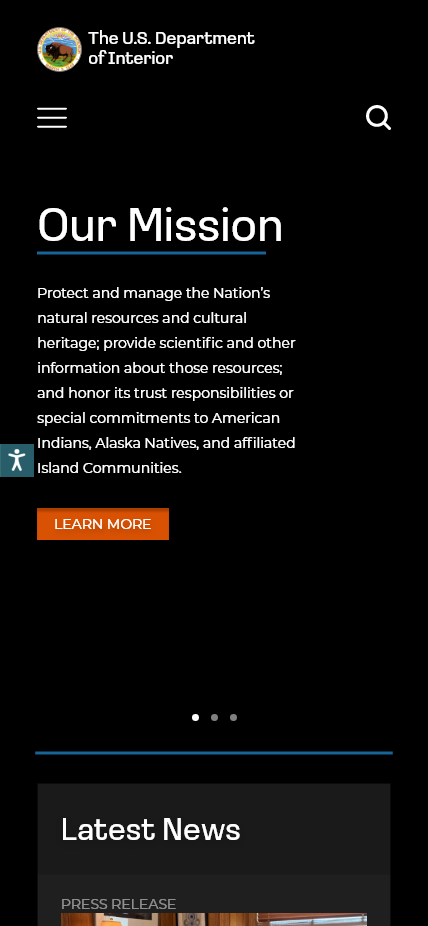
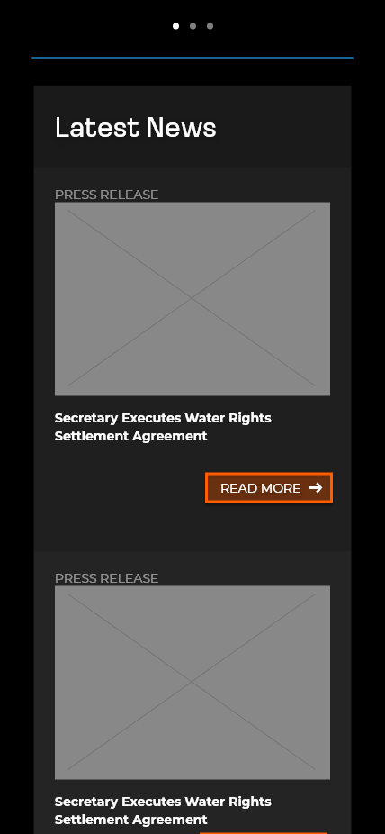

The Department of the Interior plays a central role in how the United States stewards
its public lands, increases environmental protections, pursues environmental justice,
and honors our nation-to-nation relationship with Tribes.

Project Overview
Why we chose The Department of the Interior
Me and my groupmates were given the task to redesign a government agency website and we chose The Department of the Interior because we were able to find a few navigation and accessibility issues which we are confident that we can improve.
Although the website's current layout is not terrible, we were able to brainstorm on different ways that we can revamp it.
My Role
Me and my groupmates were given the task to redesign a non-profit organization's website and we chose homelesshouston.org because we were able to find a few navigation and accessibility issues which we are confident that we can improve.
With our whole team being in Houston, we heavily connect with The Coalition for the Homeless' core values.
Project Timeline
Week 1
Week 2
Week 3
Problem Statement and the Solution
The Problem:
Users have trouble navigating and locating information from the website because the information structure of the website is confusing and ambiguous.
The Solution:
By organizing the information in a clean and cohesive format, users will have an easier time navigating and searching for more information about the Department of the Interior's core values, resources, etc.
User Research
Current Website Layout
User Testing
Before we performed heuristic evaluation, we let 5 users test the website's usability. They were given a randomized set of tasks that involves locating information and button navigation.
Here what our users have to say:
Heuristic Evaluation
After we performed a heuristic evaluation, our team has agreed that the site contained too much text, the images felt stock, and overall boring.
“...the website was easier to navigate compared to other government websites and it wasn’t an eye sore. It took me a minute to click on the right link but easy to find.”
“...the volunteer page was a little confusing. I had to scroll all the way down to locate the ‘Volunteer Pass’ when I clicked on Volunteer opportunities.”
“The pictures felt weird, I feel like I am looking at a gallery of stock Nat Geo images”
• Cares about affordable living and giving to the community
• Wants everyone to be part of the solution in battling homelessness
• Grew up in a loving family that believes in the power of kindness
• Believes that a huge goal is achievable through teamwork
• Uses social media as her way of communicating to the world
Goals
To volunteer in programs that provides shelter for the homeless
For non-profit organizations to be transparent about their donations
Frustrations
Feels frustrated when the donations are not going where it's intended
Feels defeated when she cannot find what she is looking for in a website
Empathy Map
Say
I wish people would care more about the land preservation issues.
I like researching directly on the government's website since it's accurate information, however, most of the time, it's outdated.
Do
Only click what they want to see
Immediately leaves website if they can't find what they're looking for
Feel
The media feels really outdated and it makes me feel boring when searching the website.
The colors makes me feel warm and I love the contrast it provides.
The navigation is confusing and it makes it seem like everything is out of place.
Think
"It’s great that we have a body of government that focuses on Native land preservation."
"The government needs to heavily consider the design of their websites"
Pain
Frustrated when I dont know where donations go
The whole website feels like a textbook and I dislike it.
I'm frustrated that I cannot find what I am looking for
Gain
Updating the website and adding a few UI elements will improve it
I wish the organizations are actually utilizing social media for an expanded outreach.
I wish more people can volunteer with the DOI.
Wireframes and Usability Testing
Desktop Wireframes
Version 1
Version 2

Our team has decided to base our initial design from the original layout and play with different elements. We like the big hero space aspect of the original layout so we decided to keep that but in an inline-image layout.
Based on our research, we found out that users were confused as to what the Department of Interior is on their first web visit. Hence, we designed our hero space to contain a carousel that will allow users to browse through the Department of the Interior's core values. The secondary slides will be any featured news.

We decided to test our initial wireframe and we have received feedback that it looked too similar with the current layout. So we have designed the hero space to include a bigger image and hero text to be aligned in the center which we feel would draw attention to the user.
Version 3

Further iteration was required and a usability testing was performed with 7 users. They tested both desktop and mobile wireframes and each user was given the task of exploring the navigation menu, feel the homepage aesthetic, and navigate to articles.
We then decided to opt to a hero space with a statement image that takes up majority of the space, incorporate huge text, and make the CTA button pop.
Mobile Wireframes
Version 1
Version 2




Version 3


To have a good foundation for our mobile website design,
we resized the elements of our desktop wireframe to how we
would imagine it would look like if it were to be mobile
responsive. We felt as if it felt simple, bland, and again
similar to the current web design.
On our second version, we felt better about the redesign since
it felt more updated and user-friendly. We have updated the footer as well to be aligned to the left to make the website feel more cohesive.
Before we performed our third iteration, we tested again with a different set of users and they loved the design. They know who the Department of Interior is and they find it easy to navigate throug the menu. We also changed the articles to be shown from a carousel layout to a single column layout.